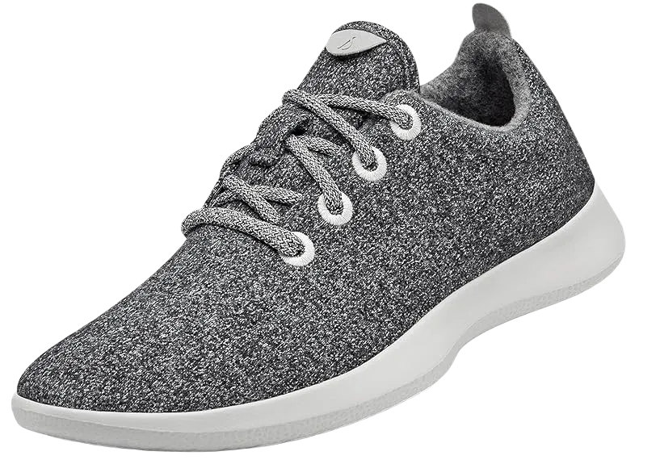

3 Best Shoes for Walking All Day At Work 2024
Unfortunately, when selecting shoes for long hours on your feet, we often focus on style and price rather than essential factors like durability, support, and our specific foot type. This oversight can lead to sore feet and discomfort by the end of the day. Proper footwear is crucial for anyone who stands or walks for extended periods, as the wrong shoes can put undue strain on your muscles and tendons, leading to leg and back pain.
When traveling, balancing comfort with style can be challenging, and poorly chosen shoes may not provide the support needed for a full day of exploring a new city. You don’t want to end up with footwear that leaves you feeling exhausted and in pain. In this article, we’ve reviewed 11 of the best walking and standing shoes, highlighting those that meet the needs of people who spend their days on their feet.
-
#1
Girls Tree Tree Runners
These innovative walking shoes, which entered the market in 2018, have made a significant impact by combining environmental responsibility with high-quality design. Allbirds, a well-known brand committed to sustainability, introduced these shoes as part of their eco-friendly Tree series.
The Tree Runners feature a breathable mesh upper made from a silky yet textured fabric, offering exceptional comfort and cooling. Crafted from eucalyptus trees sourced from FSC-certified forests, these shoes utilize only 5% of the water and 30% of the carbon typically required for conventional footwear production.
The materials used in these shoes are designed to wick away moisture, making them ideal for summer travel and all-day wear. They are machine washable (excluding the insoles and straps), and their breathable fabric helps reduce odor, even if worn without socks. -
#2
Skechers performance ladies
.webp)
These shoes offer an excellent balance of affordability, versatility, and a wide range of features. Constructed from 100% mesh fabric, they are highly breathable, making them a comfortable choice for all-day wear. Additionally, their rubber soles provide excellent slip resistance, ensuring stability on various surfaces. These Skechers are lightweight and easy on your feet, even after extended periods.
Featuring stabilizing panels made from fabric with the iconic “S” logo on the side, these shoes are easy to slip on and off, thanks to the convenient pull tab at the heel. The tapered midsole provides superior arch support compared to other options, enhancing overall stability.
These Skechers are equipped with a responsive and thoughtfully designed midsole, along with a high-heeled cushion that adds extra energy with each step. The soft mesh upper contributes to a consistently comfortable fit, making these shoes ideal for all-day use. -
#3
Male Wool Runners

Allbirds’ signature shoes are crafted from Merino wool, offering a sleek, moisture-resistant design that’s ready for any adventure. Unlike traditional wool shoes that might irritate or wear out, Allbirds uses a unique double-glazed wool blend that remains soft and clean while repelling dirt. This feature is perfect for those who prefer going sockless, as the shoes can be machine washed with your other laundry and won’t retain unpleasant odors. The natural antibacterial properties of Merino wool help prevent any unwanted smells.
Thanks to their innovative construction, these shoes stand out due to their inherent properties. They’re lightweight and breathable, keeping your feet cool in the heat and warm in the cold. The design mimics the natural flexibility of your feet, ensuring optimal weight distribution and comfort for long days of walking.
Allbirds are not only functional but also stylish, complementing a variety of outfits. Available in 13 different colors, they offer a range of choices to suit your personal style while maintaining their appeal over time.